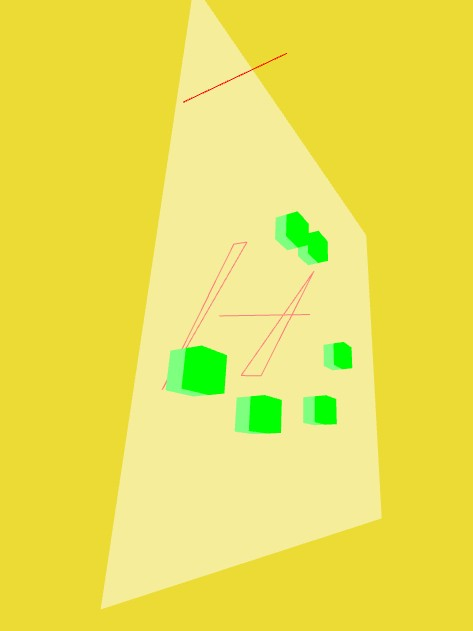
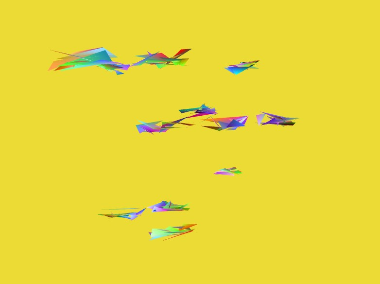
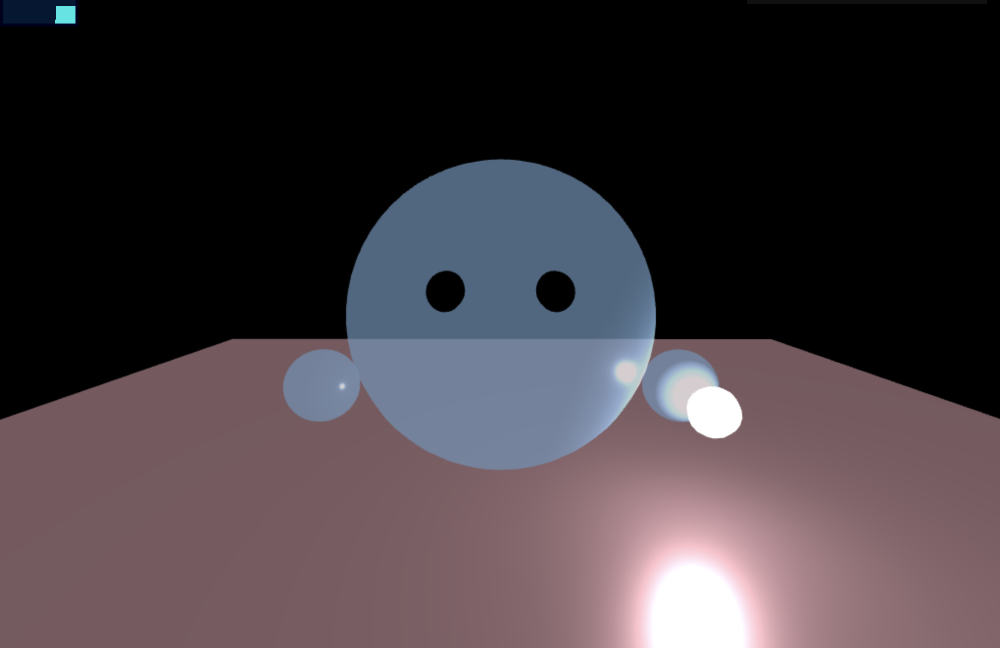
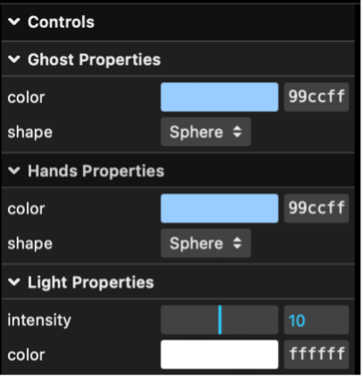
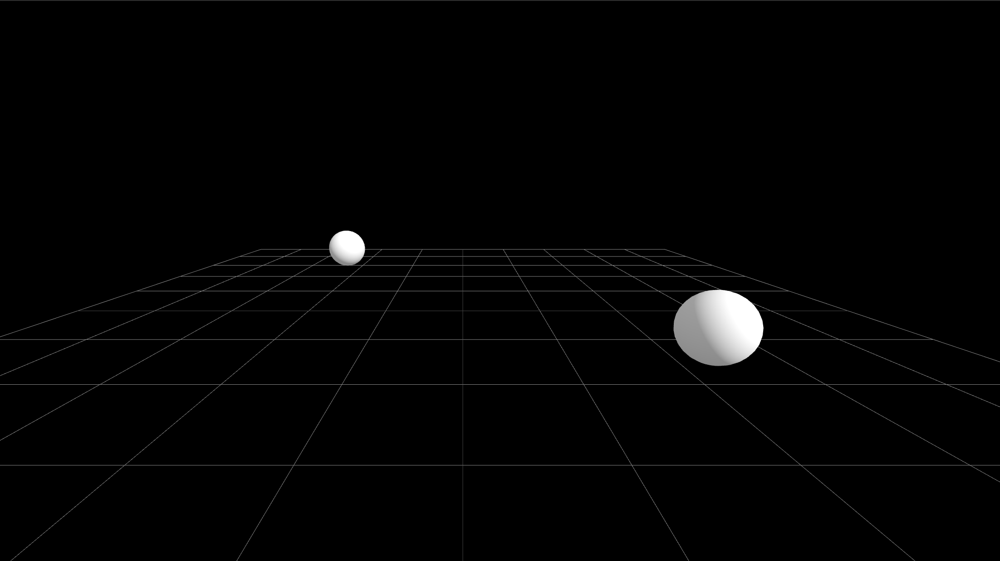

Lumen
Boluwaji Adeyanju, Jacob Brintnell, Alice Chai, Nancy Jin, Philip Michalowski, Winnie Luo
Prepared for York University course DIGM5520 Spatial Computing in Responsive Environments, 2024-06-09.
Contents (hide)
Overview
Lumen envisions a dark, underwater world illuminated by ambient lighting sufficient to observe nearby surroundings. In this world, various types and sizes of sea life agents exist. The user takes on the form of a “spirit” carrying a point light that can be used to interact with the world. They can interact with the world by throwing balls of light using their controller or pointer.
Users can explore this environment through the use of VR headsets, desktop devices, or mobile devices, allowing multiple users to access it simultaneously. In VR, users can walk, crouch, jump, and look around. On desktop devices, the user can use WASD to move and their cursor to pan the camera. Finally, on mobile devices, the user can use joysticks to walk around and control the direction of the camera, and tap the screen to throw the light.
Related Works
Graffiti Nature: Lost, Immersed and Reborn
Graffiti Nature: Lost, Immersed and Rebornis an installation where participants can colour in a creature on a piece of paper and watch it come to life within the virtual environment, interacting with other digital organisms in a shared space. These creatures multiply if they eat other living things, but disappear if they do not eat enough or are eaten by other creatures.
In Lumen, the agents and environment respond to the light that the user throws. The agents are curious about the light the user holds, but as soon as it is thrown into the world, they grow frantic and aggressive, fighting over the light as a scarce resource and sometimes choosing to kill another agent over it.
Unfinished Swan
Unfinished Swan is a game that places players in a stark-white world. Players reveal the world around them by splattering black paint, gradually uncovering the environment as they explore. The game encourages players to interact with an initially invisible world. In Lumen, users use point lights to illuminate and interact with the dark underwater environment. Both Unfinished Swan and Lumen rely on the user's actions to transform and reveal their respective worlds, enhancing the sense of exploration and engagement.
Devil's Tuning Fork
Similar to Unfinished Swan, Devil's Tuning Fork is a game that invites players to interact with the invisible world around them. It uses echolocation as its primary navigational mechanic. Players emit sound waves or “echos” to visualise their surroundings, mapping out the environment in response to auditory feedback.
Development
Agent Design and Interaction
Agent Design
The agent design process was changed over time because of unfortunate events and bandwidth issues.
Originally, the agents were supposed to be created by the user to give the player an interesting interactive experience and actual influence on the ecosystem in the virtual world. The idea behind it was to create points on a plane to give affordances to generate a user-shaped agent with a seed of improvised generative elements. The whole implementation aimed to include the agent in the world's ecosystem introducing the concept of the diversity of species.

Figure 1.
Due to unexpected events, the user generation of the agents was exchanged for static generative agents with attached shader material for color change and animation. The buffer geometry was built from random points as well as material attached without indices specified. That resulted in the flowing bunch of triangles which resembled some generative agent concept.

Figure 2.
Finally, because of the resources (bandwidth) as well as problems with triangle visuality in the VR, it was decided that agents would remain as solid geometries.
Agent Interaction
The goals of agent interaction changed throughout the course of the project. Originally the goal was to make the agents defined to a set of species that had target species and would move around. When the project was in the ideation phase and the idea of echolocation was mentioned, the agents were to be hunting with timed updated based on the pulses of vision from the user or whatever other source was to be used. As the vision for the project changed, it became clear what core ideas for the agents would stick into the final project. Agents, in terms of behaviour, would need to:
- Hunt each other
- Wander aimlessly
- Be interested in light sources
- Stay within a certain radius of the world origin
The first aim was simply to make the agents move. Agents existed as placeholder red triangles. Giving them a starter random position and a random goal position allowed them to move between those two, then assign themselves a new goal to move towards. Agents were then given a boolean that defined if they were hunting, and the species idea was dropped to move more towards an individual behaviour model for agents. This means agents will hunt any other agents, regardless of properties. If an agent was in hunting mode, it will speed dynamically towards its target until it is caught up. Removing the agents from the pool after they had been caught proved challenging, but after many trials and just as many errors, the population was able to update itself to account for the hunting behaviour. The light source idea for the final project changed a few times so from early on in agent behaviour design we accounted for the idea of certain points the agents would be interested in. The agents will, when close to a point that is designated as a "light source", will attempt to stay close to it and will congregate to hunt each other in the general area of the light.
At this point, the agents still existed as placeholder triangles, but the behaviour of them hunting, interacting with light, and wandering was working and could be integrated with the rest of the project.
Player Avatar Design
The avatar development ran through with three phases: concept development, avatar design and navigation processing, final avatar testing and completion. The concept of avatar followed with the project concept of "lighting up the ocean." Through the phase of avatar design, there were three obstacles: users must be able to navigate the avatar in multiple platforms including Virtual Reality (VR), mobile and laptops; flexibility of managing the avatar through user's preference; and light effect with the environment.
Avatar Design
The development of the avatar for Lumen went through three iterations, each of them representing a different proof of concept. The final version was selected for its general applicability and alignment with the project.

Figure 3. Concept sketches of the player avatar.
The user takes on the form of a small "spirit" with a reflective, semi-transparent body, holding a magic light ball that attracts agents. The avatar's primary function is to control the light ball to interact with the agents present in the environment. The user can set the colour and head shape of their spirit. Its default head shape is a slightly luminous sphere with two black eyes. The hands are also spherical, matching the head's material and transparency, creating a cohesive spirit-like appearance. The semi-transparency of the avatar also enhances the game's atmosphere, giving players a unique and engaging character to control.
The aesthetic appeal of this visual effect comes from its vibrant colors and contrast, creating depth and dynamic visual interest. The 3D perspective and symmetrical arrangement add spatial depth and balance. The overall composition is harmonious and eye-catching. The visual appearance is built by Three.js. Compared to glTF models, Three.js models had more flexibility on color, shape and materials for user design.

Figure 4. The player avatar.
The light was built by creating light with a sphere object, adapted from the Three.js "shadowmap" example. Compared to first version of using a bloom effect where the visual effect is limited by the environment, creating a lighting sphere allowed the light to shine other objects with materials. This material choice, combined with lighting using HemisphereLight (for the pointer) and PointLight (as the light ball), creates a visual effect that enhanced avatar's presence. The lighting setup ensures that the avatar remains visually consistent across different environments and lighting conditions within the virtual world.
Graphical user interface (GUI) controls were used to incorporate customizable avatars in order to enhance
user engagement and generativity. This feature allowed users to modify avatars' color and shape, providing a
personalized and immersive experience. The GUI controls imported add-on features from Three.js. A color
picker control and shape control along with a drop-down menu explaining each shape was written to allow
users to select their preferred appearance. The onChange event callback allows a real-time
update of the spirit head and hands based on the selected shape. Customization not only fosters a deeper
connection between the user and their avatar but also encourages prolonged interaction with the virtual
environment.

Figure 5. GUI control panel for avatar appearance.
The color GUI controls that was integrated with the server had achieved real-time updates and interactions. A WebSocket is used to send and receive JSON messages from user to the server. When a user adjusts the color settings in the GUI window, their actions are captured as events, formatted into JSON messages, and sent to the server via the WebSocket connection. However, changing the shape of the avatar using the GUI controls faced a significant challenge in connecting with the server due to its complexity of managing shape transformations across multiple clients. Shape changes involve altering 3D geometry with position and size changes, which required more extensive data transmission and processing. Due to the time limit of this project, the shape change can only be seen on the user's own screen than shared across all platforms.
Navigation
Initially, we looked at implementing a "cube-based gaze interaction" so that whenever the user's gaze is fixed for more than two seconds, the avatar slowly moves to the gazed location. This approach can enhance the connection between artistic works and humans. Regardless of what type of creature the avatar ended up being, it establishes a connection with human behavior. Research in human-computer interaction has shown that gaze-based interfaces reduce physical strain and cognitive load compared to traditional input methods. This makes gaze interaction a more natural and effortless way for users to engage with digital environments.
Dynamic gaze effect can be achieved by creating a three-dimensional environment. Within this environment, users can manipulate elements within the scene by adjusting the camera view.The 'animate' function is called at each frame update to handle time changes, camera movement distance, and cube color updates.To achieve 'delayed synchronization', we use a graphical sphere to synchronize with the camera movement, ensuring that when the user focuses on a specific area for more than 2 seconds, the sphere gradually follows the user's gaze. In the case of the cube element, achieve a gradient effect of the cube color by dynamically updating the 'gazetime' variable, which represents the duration of the user's gaze. As the gaze time increases, the color of the cube gradually changes from dark to light. In this way, we created a dynamic and interactive 3D environment that allows the user to change the appearance and position of elements in the scene by adjusting the camera movement, thus enabling an easy interactive experience.
In the end, this was removed due to time constraints and in the case the user wanted to stay in one spot and take their time observing the agents without disrupting them.
Instead, we implemented multiple control systems to accommodate different devices and user preferences. For PC users, we integrated PointerLockControls, allowing for first point of view mouse-based navigation. The PointerLockControls have a similar rotation system as a virtual reality system, which brought less confusion when users viewed Lumen from different systems. For the avatar movement, we used keyboard inputs (W, A, S, D for forward, left, backward, and right movements, respectively, Shift to run, Option+Alt to crouch). For mobile users, we implemented joystick controls using the nippleJS add-on from Three.js. This setup includes two static joysticks where the right joystick controlled the camera perspective and the left joystick controlled the avatar movement.
To cater to the growing popularity of virtual reality, we imported WebXR API to generate the VR settings. This integration involved creating an independent camera setup for VR and enabling users to experience the virtual environment in a more immersive manner. The VRButton add-ons allowed users to toggle VR mode, facilitating intuitive interaction with the virtual world.
Sound Synthesis
The shift in mindset evolved from selecting pre-existing music to composing original music. From sourcing existing melodies (ready-made) to generating new music, the focus shifted to coding melodies by understanding the notation of musical notes within the programming language. The goal was to mix the melodies, position them across two channels, and achieve an immersive, three-dimensional sound effect within the VR space. However, although the artwork's environment is related to the undersea, the chaotic sound of water alone is too realistic to evoke an emotional response from the viewer. The inspiration came from simulating the experience of being immersed in a bathtub with music playing through a stereo, creating a blend of water sounds and music. This blend results in a chaotic, fuzzy, and ethereal melody that induces relaxation.
The first step involved enhancing the existing HTML. This provided functionalities for creating musical notes, defining note sequences, setting audio parameters, and controlling playback.
- Sequence class: Defines a class named Sequence, providing the logic for a complete music sequence player, allowing for easy creation and playback of music sequences within a web page.
- Enharmonics: This variable contains a series of enharmonics, each representing the distance in semitones from the note C.
- Note class: Defines a Note class for representing musical notes.
It has two properties: "frequency,"
representing the frequency of the note, and "duration," representing the duration of the note. The
getFrequency()method converts note names to frequencies, while thegetDuration()method converts durations to seconds.
Following that is the CSS section, which establishes the overlay. The overlay's function is to mask a specific portion when coding the visual aspect in JavaScript. This ensures that the section isn't visible in the final visual output but remains masked. The overlay covers the bottom of the page entirely and spans the full width of the screen without impacting the actual page content.
* {
margin: 0;
}
#overlay {
position: absolute;
bottom: 0px;
left: 0px;
z-index: 10;
width: 100%;
white-space: pre;
color: white;
background-color: rgba(0, 0, 0, 0.5);
text-rendering: optimizeLegibility;
font-family: monospace;
}
The JavaScript code covers the following key parts:
- Three.js and WebXR setup: First, it imports the necessary Three.js components and WebXR related components. Then it creates the scene, renderer, camera, and enables WebXR functionality.
- Lighting and mesh auxiliary lines: Added hemispherical and directional lighting to the scene, as well as a mesh auxiliary line.
- Window resize handling: Listened to a window size change event to update the camera's aspect ratio and handle renderer sizing in XR mode.
- Audio settings: An audio listener was created and added to the camera. Also created a positional audio object and added it to a cube mesh object. In addition, the audio context is launched by clicking on the page.
- Controller setup: An OrbitControls controller was created to allow interaction in the scene.
- Animation loop: An animation loop is set up to update the scene at each frame and render it.
- Music sequence playback settings: In the
audiosetup()function, a music sequence is defined and some audio parameters are set and initialized when the page is loaded.
Based on this, two melodies were created, exploring how melodies can be expressed in code to align with the project's theme. The variable "lead" defines a simple sequence of notes. Each string represents a note, including its pitch and duration. We experimented with different note combinations to create a suitable melody for the ambient music. Melody01 consists of quarter notes, while Melody02 is primarily comprised of eighth notes but also includes some sixteenth notes, quarter notes, half notes, and dotted eighth notes, resulting in a rhythmically diverse melody.
- Note names: Represent the alphabetical letters for pitch (A to G), followed by a number indicating the octave of the note. For example, “C4” represents the note C in the fourth octave.
- Duration: Represents the duration of a note, with letters indicating different note lengths. Common symbols include:
- "q" for quarter note
- "e" for eighth note
- "s" for sixteenth note
- "h" for half note
- "w" for whole note
- "d" for a note duration with a dot, indicating the duration is increased by half the note's original length.
To alter the sound to create a sense of underwater blurriness and echo, a low-pass filter was created
using const filter = audioContext.createBiquadFilter(), where its type and parameters were set,
and then
applied to the audio sequence. This enables filtering of the audio to achieve various sound effects such as
bass, treble, or blur. Additional adjustments were made to the music sequence's sound effects using
sequence1.staccato, sequence1.gain.gain.value,
sequence1.mid.frequency.value, and
sequence1.mid.gain.value. By tweaking these parameters, control over the audio's tone quality,
volume, and
timbre is achieved, resulting in a richer and more dynamic musical experience.
Finally, to achieve harmonious chords, different melodies are played simultaneously in the left and right
channels. This creates a rich, three-dimensional ambient sound in the Three.js scene. This approach allows
for the primary melody to vary as individuals move within the environment, while the secondary melody
remains
fixed, enhancing the overall immersive sound experience. Adding a second music sequence, lead2, and calling
the makeSequence() function twice within the audiosetup() function, using the lead
and lead2 sequences respectively, enables the simultaneous playback of two different music sequences within
the scene.
The following two melodies were created:
Melody01
let lead = [
"C4 q",
"E4 q",
"G4 q",
"C5 qd",
"A3 q",
"C4 q",
"E4 q",
"A4 q",
"F3 q",
"A3 q",
"C4 q",
"F4 q",
"G3 q",
"B3 q",
"D4 q",
"G4 qd",
];
Melody02
let lead = [
"C4 e",
"E4 e",
"G4 e",
"B4 e",
"C5 e",
"A4 e",
"F4 e",
"D4 e",
"C4 e",
"B3 e",
"G3 e",
"E3 e",
"C3 q",
"- e",
"Bb3 s",
"A3 s",
"Bb3 e",
"G3 e",
"A3 e",
"G3 e",
"F3 e",
"G3 ee",
"G3 e",
"A3 e",
"Bb3 e",
"A3 e",
"G3 e",
"A3 e",
"F3 q",
"B4 s",
"A4 s",
"G4 e",
"A4 e",
"B4 e",
"C5 e",
"D5 q",
"E4 s",
"F4 s",
"G4 e",
"F4 e",
"E4 e",
"D4 e",
"C4 q",
"E4 e",
"F4 e",
"G4 e",
"A4 e",
"B4 e",
"C5 e",
"D5 e",
"E5 q",
"C5 h",
"G4 e",
"E4 e",
"C4 hh",
];
In the makeSequence() function, two sphere mesh objects are created and positioned at different
locations.
Each sphere mesh is attached to a PositionalAudio object, which plays the corresponding music sequence. This
establishes an association between the music sequences and the visual objects in the scene, allowing the
music to be spatially played within the scene.

Figure 6. The two sphere mesh objects placed in the scene that play the two music
sequences.
Databasing and User Persistence
The development of databasing and user persistence in Lumen was driven by the need to ensure data reliability and seamless multiplayer interaction, especially in the event of server crashes. The primary objective was to store and share user data effectively, allowing all connected users to see each other within the shared space in real-time.
Initially, we considered using MongoDB for data storage and sharing. However, given our expectation of a relatively small user base, we transitioned to using JSON files for simplicity and efficiency. This change streamlined the development process and reduced dependency on an external database service.
The communication between the server and client is handled using WebSockets. User data, including username, password, avatar location, avatar color, and the state of the agents in the environment is stored and shared among all connected users. Messages are sent every 50 milliseconds, ensuring that the state changes are promptly communicated and reflected across all connected clients.
The messages used the following structure:
{
type: "type", // indicates the message type
data: {
// the data being sent / payload.
}
}
For example, the message for the server to send the state of all agents to all clients on every frame:
{
type: “creatures”,
creatures: [
{
pos: [0, 0, 0],
dir: [0, 0, 0, 1], // (quaternion orientation)
color: 927349, // hex value
},
// etc. for all creatures
]
}
There are two JSON files being used to store the user and agent data:
- user_data.json: The first time the user logs in and connects to Lumen, they are automatically assigned a unique user ID (UUID) which is then stored along with the position and colour of their avatar. When the server receives a username and password at log in, it retrieves the corresponding avatar details and returns them to the client.
- shared_state.json: The state of all avatars and agents. This ensures that all connected users have a consistent view of the multiplayer space. This file tracks the positions and states of avatars and agents, facilitating real-time updates and interactions.
Challenges and Solutions
Results
Discussion of the results, including: relevant imagery (photos and screen captures) include video (1-2 minutes), including some sections with narration statistical information as well as observations regarding use an outline of future work to be done
Presentation Slides
Future Work
Due to time limitations, with only two weeks allocated for the development of Lumen, there are many areas that could be improved or expanded upon. Future work should focus on improving controls and interactions.
The current implementation of VR controls in Lumen is limited, allowing users only to look around without full navigational capabilities. Addressing this issue is a priority, as enabling complete VR control (walking, crouching, jumping, and throwing the ball of light), will improve the VR experience of Lumen. Additionally, joystick functionality on mobile devices needs refinement; while they work on tablets, they ended up being unusable on phones. These joystick controls need to either be fixed or replaced with another method. Perhaps adding in buttons to control the avatar and camera would work better.
Introducing a greater variety of sea life agents with more complex behaviors will make the environment more engaging and lifelike. Currently, agents will approach light sources, but adding behaviors such as multiplying in the absence of light (rather than periodically) will create a more dynamic and self-sustaining ecosystem. Future development should focus on creating unique interactions between the agents and the user as well as between the agents themselves.
References
- Cennis, Kevin. "Three.js WebXR Demo." GitHub Gist. May 23, 2024. Accessed May 29, 2024. https://gist.github.com/kevincennis/0a5bcd12625a02e48970.
- Cennis, Kevin. "TinyMusic." GitHub Repository. Accessed May 29, 2024. https://github.com/kevincennis/TinyMusic.
- Jacob, Robert J., and Keith S. Karn. "Eye Tracking in Human-Computer Interaction and Usability Research: Ready to Deliver the Promises." In The Mind's Eye: Cognitive and Applied Aspects of Eye Movement Research, edited by Jukka Hyona, Ronny Radach, and Heiner Deubel, 573-605. North-Holland: 2003.
- Mrdoob. “Three.Js/Examples/Webgl_buffergeometry_rawshader.Html at Master · Mrdoob/Three.Js.” GitHub, github.com/mrdoob/three.js/blob/master/examples/webgl_buffergeometry_rawshader.html#L23. Accessed 26 May 2024.
- Mrdoob. “Three.Js/Examples/Webgl_decals.Html at Master · Mrdoob/Three.Js.” GitHub, github.com/mrdoob/three.js/blob/master/examples/webgl_decals.html. Accessed 15 May 2024.
- Roe, Bobby. “Three.Js – Buffer Geometry Art.” YouTube, YouTube, 14 Mar. 2022, www.youtube.com/watch?v=Q7soTiQ1IBk.
- Simon, Bruno. “Raging Sea.” Three.Js Journey, threejs-journey.com/lessons/raging-sea. Accessed 26 May 2024.
- “Three.Js.” Three.Js Docs, threejs.org/docs/#api/en/core/BufferGeometry. Accessed 15 May 2024.